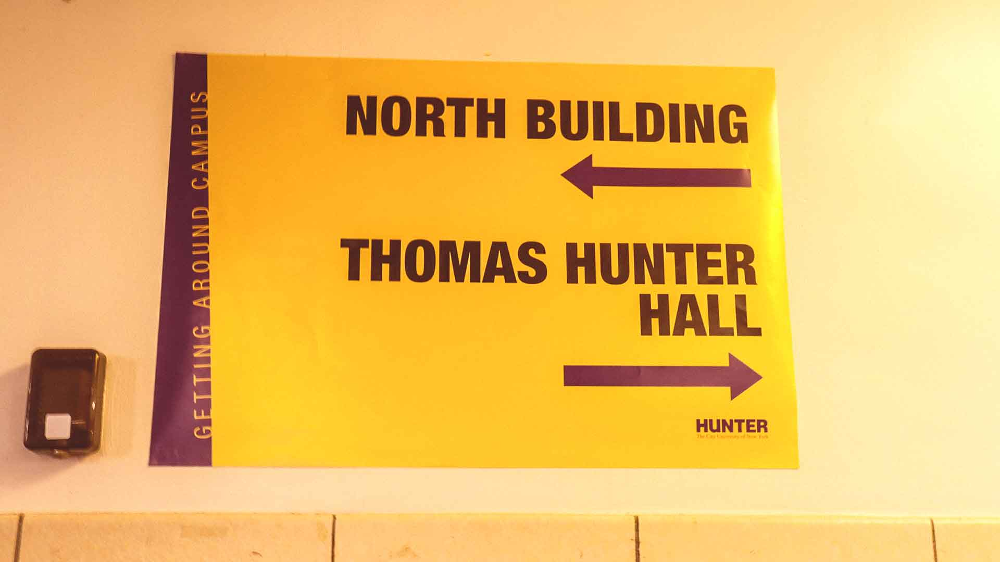
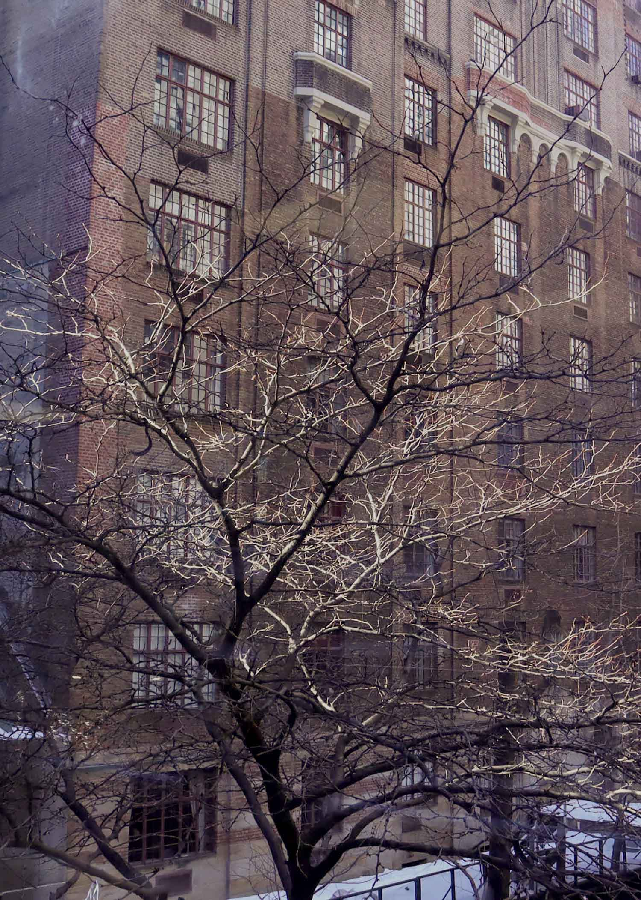

This image is 1920 × 1080 px. I chose the image of the Hunter direction sign because it's something we see all the time and it's noticeable with the yellow color. The original image was more dull and less bright, so I decided to enhance it by brightening it up and bringing out the yellow tones. I also decided to make the image a bit warmer than the original one. I mainly wanted to focus on the sign since it's something we see walking at Hunter everyday.

This image is the 5" × 7" photo. I chose it because I wanted to show the trees during wintertime and capture how calm and still everything feels in that season. The original image had more of a blue hue, which made it look colder and dull. I decided to brighten it up and make it look warmer to change the overall mood of the photo. Even though it was freezing outside, I wanted the image to feel warmer and more comforting. I wanted to focus on the trees as the main subject and allow them to fill the frame so they have the full attention. I like how the sun falls on the branches, and it makes the image feel balanced and simple.
I really enjoy photography, especially because of the memories attached to each picture. I have my own Canon digital camera that I use to take pictures of family, friends, and different moments in my life. Looking back at old photos always feels meaningful to me because it allows me to relive certain moments and emotions. I have never really wanted to pursue photography professionally, as it has always been something I like to do creatively or personally for fun. Before this class, I had never used Photoshop or felt like I needed to. When I wanted to make collages or creative projects, I usually used Canva because I found it simple and easy to navigate. Using Photoshop for the first time was definitely more challenging. There were so many tools, layers, and adjustment options that it felt a bit overwhelming at first. However, after experimenting and following along with instructions, I started to understand how everything worked together. I really enjoyed playing with the tones and saturations. It was interesting to see how small changes in lighting, contrast, or color balances can completely transform the mood of the photo. It showed me how Photoshop can be used to enhance a feeling or emphasize certain details in a photo. I loved experimenting the technical side of photography more and using Photoshop to create a totally new image.
Back to Isabel's Portfolio